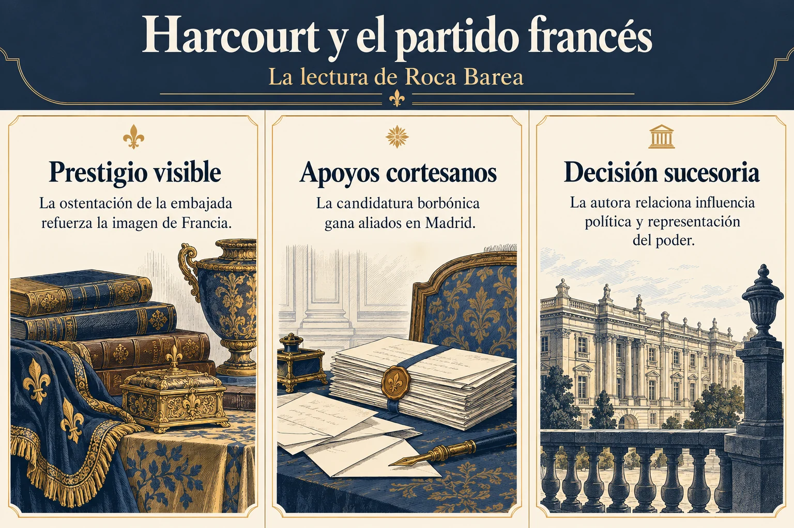

Volumen 1 · Capítulo 1 · Entrega 02
Harcourt y la formación del partido francés
Estudio expositivo de Fracasología de María Elvira Roca Barea
La atención se desplaza ahora de las negociaciones entre potencias a la corte madrileña. Para Roca Barea, la sucesión dependía en gran medida de lo que sucediera en Madrid: de la información que llegaba al rey, del control de los cargos y de la capacidad para convertir una candidatura en solución aparentemente inevitable. Henri de Harcourt ocupa un lugar central porque reúne las cualidades que la autora atribuye a la diplomacia francesa del momento: habilidad para intervenir en las relaciones cortesanas, empleo del dinero y dominio de la representación pública del poder.
La descripción de su llegada, con un despliegue de carrozas, vajillas, vestidos y servidores, tiene un sentido preciso. A través del lujo, la embajada hace visible la fuerza del monarca al que representa. La ostentación prepara un ambiente en el que el prestigio francés puede convertirse en influencia política. Junto a esa exhibición, el libro presenta la búsqueda de apoyos entre personajes con capacidad para intervenir en la decisión sucesoria. La autora contrasta la actividad de Harcourt con la menor eficacia que atribuye a la representación austriaca y señala el papel de Portocarrero en el avance del partido borbónico.


Ampliar imagenLeer el esquema y sus referencias
- Prestigio visible. La ostentación de la embajada refuerza la imagen de Francia
- Apoyos cortesanos. La candidatura borbónica gana aliados en Madrid
- Decisión sucesoria. La autora relaciona influencia política y representación del poder
Fuente de lectura: Roca Barea, Fracasología (2019), apartado desarrollado en la entrega 02. Esquema expositivo de la interpretación de la autora; no cita literal.
El episodio decisivo es el Motín de los Gatos, ocurrido en Madrid el 28 de abril de 1699. Roca Barea reconoce la existencia de problemas de abastecimiento y encarecimiento de los productos básicos. Su objeción se dirige a una explicación que haga de la carestía una causa suficiente del desenlace político. Para examinarla, compara la evolución de los precios con la aparición y desaparición de la protesta. Según los datos que utiliza, el encarecimiento continuó después del motín sin provocar una sucesión semejante de levantamientos. Esa falta de correspondencia refuerza, en su argumento, la necesidad de atender a la intervención de los grupos cortesanos.
Las consecuencias de la jornada permiten identificar quiénes obtuvieron ventaja. El corregidor Francisco de Vargas Lezama pierde su puesto y Francisco Ronquillo, vinculado al partido contrario, ocupa su lugar. La casa del conde de Oropesa es asaltada y este abandona Madrid. Como Oropesa era uno de los apoyos más importantes de la opción austriaca, su caída altera el equilibrio de fuerzas en la corte. El motín aparece en el ensayo como una movilización del descontento popular que facilita un cambio de gobierno y, con él, un cambio en las posibilidades de los candidatos al trono.
La autora recoge interpretaciones de historiadores que sostienen la manipulación o el aprovechamiento del tumulto por las élites rivales. Al mismo tiempo, reconoce que ese trabajo de intervención no suele dejar una documentación directa que permita reconstruirlo por completo. Su explicación procede de la combinación de indicios: la posición de los beneficiarios, la precisión de algunas exigencias de los amotinados y el contraste entre el problema económico persistente y el objetivo político conseguido. Conviene conservar esa forma de argumentar para distinguir el resultado comprobable de la jornada de la atribución de su preparación.
Tras la caída de Oropesa, los rumores y pasquines contribuyen a consolidar el nuevo equilibrio. En la exposición del libro, los partidarios del candidato francés se presentan como defensores de la patria y caracterizan al grupo rival como un poder extranjero, asociado a la reina alemana. Esa inversión interesa especialmente a Roca Barea: los defensores de una solución francesa consiguen apropiarse del lenguaje de la lealtad nacional. La propaganda interviene tanto en el derribo de los adversarios como en la justificación de quienes los sustituyen. La imagen de una España arruinada por el mal gobierno proporciona el marco con el que el cambio de hombres y de dinastía podrá presentarse como rescate.
Referencia de la entrega y criterio de lectura
Capítulo 1, «El embajador Henri de Harcourt y el motín de los gatos». libro, OEBPS/Text/capit01.xhtml, epígrafe sigil_toc_id_3. Sobre las interpretaciones del motín, véanse las notas 24–32 del libro.
El texto reconstruye el argumento de Roca Barea. Las alusiones a otras obras proceden del ensayo y no implican la consulta independiente de todas ellas. Criterio editorial de la colección.
Referencia de la entrega. Capítulo 1, «El embajador Henri de Harcourt y el motín de los gatos». libro, OEBPS/Text/capit01.xhtml, epígrafe sigil_toc_id_3. Sobre las interpretaciones del motín, véanse las notas 24–32 del libro.